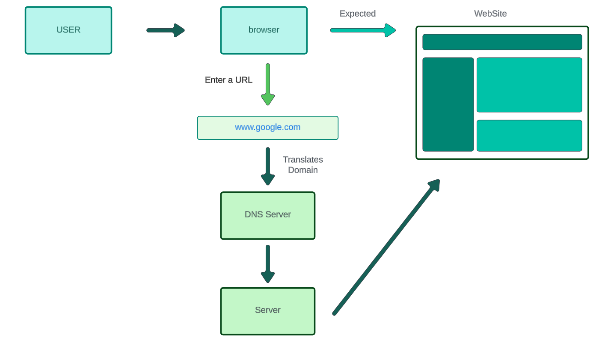

How Web Works
Introduction
Suppose you enter something like "www.google.com" into your browser, to access Google's website. The browser will return with the exact web page you needed. So, what's happening behind the scene? well, the code/resource for the webpage is actually stored in the server, which is a device/program that receives and replies to demands made over a network. these servers will deliver the code/resource to the client machine.
referencehow does the server know?
when you enter the URL (unified resource locator) into you're browser it goes to DNS Server, which is basically a huge dictionary in which each domain name is stored/mapped with its IP address. After translating the domain in DNS Server returns an IP address to the server.
The server check if the requested webpage is on that IP and the one on which it is stored. After that, it responds to the browser. If it's found it displays the page otherwise the browser will display the corresponding message.
referenceMake you're Own WebSite
There are many web technologican solution out there to make a website. However when we look back all these websites are made of mainly three components i.e, HTML, CSS, and JavaScript